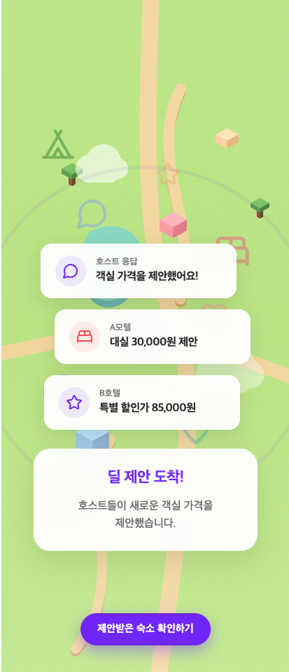
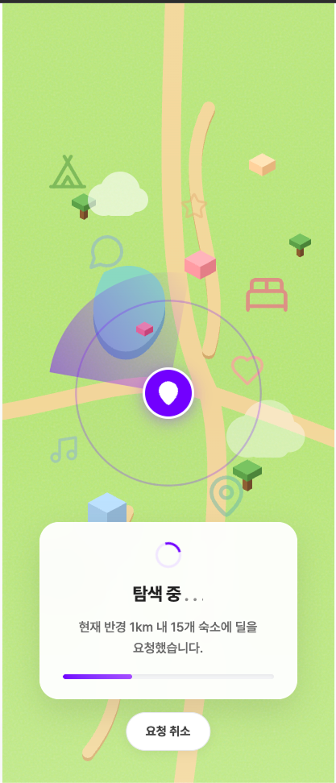

Mobile-first Product
Android와 Flutter 앱 경험을 바탕으로 iOS/Android 사용자 흐름, 앱 생명주기, 스토어 배포 흐름을 자동화하고 운영했습니다.
최봉재 · Senior App / Cross-Platform Engineer
AI 가드레일과 서브에이전트로 작업을 나누고 검증했습니다. Flutter/Android 앱 기반으로 WebView 인증, PG 결제 예외, SignalR 실시간 상태, Fastlane/Firebase 배포 자동화를 구축했습니다.

앱과 웹 사이에서 깨지기 쉬운 결제, 인증, 배포 흐름을 문서, 테스트, 자동화로 다시 확인할 수 있게 만들었습니다.
Positioning
Android와 Flutter 앱 경험을 바탕으로 iOS/Android 사용자 흐름, 앱 생명주기, 스토어 배포 흐름을 자동화하고 운영했습니다.
React 웹, WebView, 쿠키 인증, 결제 딥링크처럼 앱과 웹 사이에서 자주 깨지는 경계를 정리합니다.
AI 지침, 테스트, 배포 스크립트, 릴리즈 문서로 반복 실수와 수동 작업을 줄입니다.
Featured Case Study
게스트 앱, 호스트 앱, 파트너 웹이 하나의 예약 협상 흐름을 공유하는 환경에서 PG 결제 예외, WebView 인증, SignalR 상태 동기화, 앱 배포 자동화, AI 개발 지침을 테스트와 문서 흐름으로 묶었습니다.

PG 취소 상태를 실패와 분리하고 앱 복귀, 다이얼로그, fallback navigation까지 이어지는 흐름을 테스트했습니다.
결제 취소 흐름 · 예외 전파 · 회귀 테스트앱 WebView와 브라우저의 쿠키 수명 차이, 자동 로그인 의도, 토큰 갱신 순서를 나눠 정리했습니다.
Cookie auth · WebView session · token refreshiOS와 Android 빌드/배포를 병렬화하고 Firebase 배포 전 테스트와 결과물 검증을 문서화했습니다.
Fastlane · Firebase App Distribution · 약 50% time saved레포별 작업 지침, 서브에이전트 분업, React 위험 패턴, Flutter 상태관리 경계, 배포 검증 명령을 코드베이스에 넣었습니다.
AGENTS.md · Copilot instructions · 서브에이전트 · 검증 명령Engineering Quality System
AGENTS.md와 Copilot instructions에 레포 구조, 작업 경계, 검증 명령을 남겨 AI가 같은 기준으로 작업하게 했습니다.
AGENTS.md / .github/instructionsuseEffect 무한 루프, 라우터 리마운트, Query Key 불안정 같은 반복 사고를 체크리스트로 만들었습니다.
infinite-loop-prevention.mdc디자인 리뉴얼을 바로 코드로 옮기지 않고, 기존 레이아웃/상태관리 규칙에 맞춰 번역하는 절차를 둡니다.
figma-to-react / figma-to-flutter배포 전 분석, 테스트, 버전 동기화, 릴리즈 노트를 스크립트와 문서 흐름으로 묶었습니다.
Fastlane / Firebase / shell scriptsSelected Work
Flutter 앱 2종과 React 파트너 웹을 연결한 숙박 예약 협상 플랫폼. 결제 WebView, 인증, 실시간 상태, 배포 자동화를 맡았습니다.
패션 커머스 하이브리드 앱과 Vue 기반 프론트엔드 개발. JSBridge 연동과 API 코드 생성 흐름을 구현했습니다.
중고차 플랫폼 고객용/딜러용 앱 개발. 딜러 앱 리뉴얼, 이미지 처리 성능 개선, Kotlin/MVVM 도입을 진행했습니다.
Career Timeline
Flutter 앱 2종과 React 파트너 웹의 결제, 인증, 실시간, 배포 흐름 안정화
셀룩 하이브리드 앱 및 프론트엔드 개발
헤이딜러 고객용/딜러용 Android 앱 개발
타임스프레드, 치즈카운터, 물류/PDA, 영상, 지도 기반 앱 개발
Contact